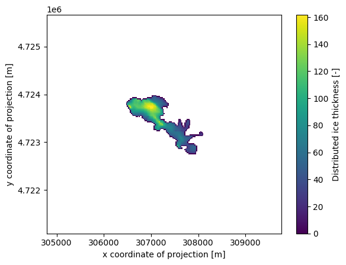
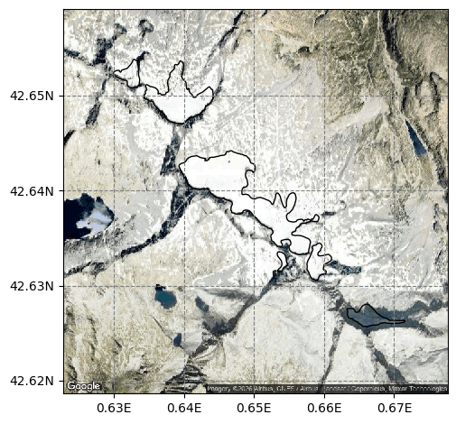
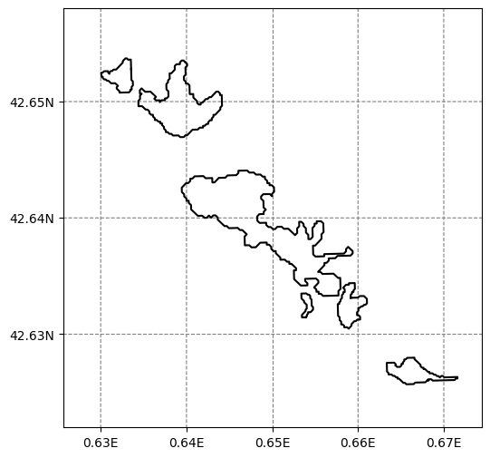
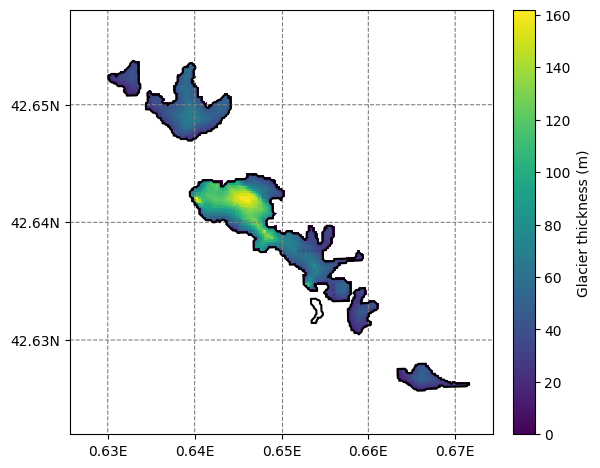

Ice thickness inversion#
This example shows how to run the OGGM ice thickness inversion model with various ice parameters: the deformation parameter A and a sliding parameter (fs).
There is currently no “best” set of parameters for the ice thickness inversion model. As shown in Maussion et al. (2019), the default parameter set results in global volume estimates which are a bit larger than previous values. For the consensus estimate of Farinotti et al. (2019), OGGM participated with a deformation parameter A that is 1.5 times larger than the generally accepted default value.
There is no reason to think that the ice parameters are the same between neighboring glaciers. There is currently no “good” way to calibrate them, or at least no generally accepted one. We won’t discuss the details here, but we provide a script to illustrate the sensitivity of the model to this choice.
New in version 1.4: we demonstrate how to apply a new global task in OGGM, workflow.calibrate_inversion_from_consensus to calibrate the A parameter to match the consensus estimate from Farinotti et al. (2019).
At the end of this tutorial, we show how to distribute the “flowline thicknesses” on a glacier map.
Run#
# Libs
import geopandas as gpd
# Locals
import oggm.cfg as cfg
from oggm import utils, workflow, tasks, graphics
# Initialize OGGM and set up the default run parameters
cfg.initialize(logging_level='WARNING')
rgi_region = '11' # Region Central Europe
# Local working directory (where OGGM will write its output)
WORKING_DIR = utils.gettempdir('OGGM_Inversion')
cfg.PATHS['working_dir'] = WORKING_DIR
# This is useful here
cfg.PARAMS['use_multiprocessing'] = True
# RGI file
path = utils.get_rgi_region_file(rgi_region)
rgidf = gpd.read_file(path)
# Select the glaciers in the Pyrenees
rgidf = rgidf.loc[rgidf['O2Region'] == '2']
# Sort for more efficient parallel computing
rgidf = rgidf.sort_values('Area', ascending=False)
# Go - get the pre-processed glacier directories
# We start at level 3, because we need all data for the inversion
# we need centerlines to use all functions of the distributed ice thickness later
# (we specifically need `geometries.pkl` in the gdirs)
cfg.PARAMS['border'] = 80
base_url = ('https://cluster.klima.uni-bremen.de/~oggm/gdirs/oggm_v1.6/'
'L3-L5_files/2025.6/centerlines/W5E5/per_glacier_spinup') # todo<-- here is an issue with preprocessed gdir...todo
gdirs = workflow.init_glacier_directories(rgidf, from_prepro_level=3,
prepro_base_url=base_url)
# to assess the model geometry (for e.g. distributed ice thickness plots),
# we need to set that to true
#cfg.PARAMS['store_model_geometry'] = True
#workflow.execute_entity_task(tasks.prepare_for_inversion, gdirs)
# Default parameters
# Deformation: from Cuffey and Patterson 2010
glen_a = 2.4e-24
# Sliding: from Oerlemans 1997
fs = 5.7e-20
2026-03-09 22:57:14: oggm.cfg: Reading default parameters from the OGGM `params.cfg` configuration file.
2026-03-09 22:57:14: oggm.cfg: Multiprocessing switched OFF according to the parameter file.
2026-03-09 22:57:14: oggm.cfg: Multiprocessing: using all available processors (N=4)
2026-03-09 22:57:14: oggm.cfg: Multiprocessing switched ON after user settings.
2026-03-09 22:57:15: oggm.workflow: init_glacier_directories from prepro level 3 on 35 glaciers.
2026-03-09 22:57:15: oggm.workflow: Execute entity tasks [gdir_from_prepro] on 35 glaciers
with utils.DisableLogger(): # this scraps some output - to use with caution!!!
# Correction factors
factors = [0.1, 0.2, 0.3, 0.4, 0.5, 0.6, 0.7, 0.8, 0.9, 1]
factors += [1.1, 1.2, 1.3, 1.5, 1.7, 2, 2.5, 3, 4, 5]
factors += [6, 7, 8, 9, 10]
# Run the inversions tasks with the given factors
for f in factors:
# Without sliding
suf = '_{:03d}_without_fs'.format(int(f * 10))
workflow.execute_entity_task(tasks.mass_conservation_inversion, gdirs,
glen_a=glen_a*f, fs=0)
# Store the results of the inversion only
utils.compile_glacier_statistics(gdirs, filesuffix=suf,
inversion_only=True)
# With sliding
suf = '_{:03d}_with_fs'.format(int(f * 10))
workflow.execute_entity_task(tasks.mass_conservation_inversion, gdirs,
glen_a=glen_a*f, fs=fs)
# Store the results of the inversion only
utils.compile_glacier_statistics(gdirs, filesuffix=suf,
inversion_only=True)
---------------------------------------------------------------------------
RemoteTraceback Traceback (most recent call last)
RemoteTraceback:
"""
Traceback (most recent call last):
File "/usr/local/pyenv/versions/3.13.12/lib/python3.13/multiprocessing/pool.py", line 125, in worker
result = (True, func(*args, **kwds))
~~~~^^^^^^^^^^^^^^^
File "/usr/local/pyenv/versions/3.13.12/lib/python3.13/multiprocessing/pool.py", line 48, in mapstar
return list(map(*args))
File "/usr/local/pyenv/versions/3.13.12/lib/python3.13/site-packages/oggm/workflow.py", line 109, in __call__
res = self._call_internal(func, arg, kwargs)
File "/usr/local/pyenv/versions/3.13.12/lib/python3.13/site-packages/oggm/workflow.py", line 103, in _call_internal
return call_func(gdir, **kwargs)
File "/usr/local/pyenv/versions/3.13.12/lib/python3.13/site-packages/oggm/utils/_workflow.py", line 503, in _entity_task
out = task_func(gdir, **kwargs)
File "/usr/local/pyenv/versions/3.13.12/lib/python3.13/site-packages/oggm/core/inversion.py", line 410, in mass_conservation_inversion
cls = gdir.read_pickle('inversion_input')
File "/usr/local/pyenv/versions/3.13.12/lib/python3.13/site-packages/oggm/utils/_workflow.py", line 3270, in read_pickle
with _open(fp, 'rb') as f:
~~~~~^^^^^^^^^^
File "/usr/local/pyenv/versions/3.13.12/lib/python3.13/gzip.py", line 66, in open
binary_file = GzipFile(filename, gz_mode, compresslevel)
File "/usr/local/pyenv/versions/3.13.12/lib/python3.13/gzip.py", line 203, in __init__
fileobj = self.myfileobj = builtins.open(filename, mode or 'rb')
~~~~~~~~~~~~~^^^^^^^^^^^^^^^^^^^^^^^^
FileNotFoundError: [Errno 2] No such file or directory: '/tmp/OGGM/OGGM_Inversion/per_glacier/RGI60-11/RGI60-11.03/RGI60-11.03207/inversion_input.pkl'
"""
The above exception was the direct cause of the following exception:
FileNotFoundError Traceback (most recent call last)
Cell In[2], line 12
9 for f in factors:
10 # Without sliding
11 suf = '_{:03d}_without_fs'.format(int(f * 10))
---> 12 workflow.execute_entity_task(tasks.mass_conservation_inversion, gdirs,
13 glen_a=glen_a*f, fs=0)
14 # Store the results of the inversion only
15 utils.compile_glacier_statistics(gdirs, filesuffix=suf,
16 inversion_only=True)
File /usr/local/pyenv/versions/3.13.12/lib/python3.13/site-packages/oggm/workflow.py:186, in execute_entity_task(task, gdirs, **kwargs)
184 if cfg.PARAMS['use_multiprocessing'] and ng > 1:
185 mppool = init_mp_pool(cfg.CONFIG_MODIFIED)
--> 186 out = mppool.map(pc, gdirs, chunksize=1)
187 else:
188 if ng > 3:
File /usr/local/pyenv/versions/3.13.12/lib/python3.13/multiprocessing/pool.py:367, in Pool.map(self, func, iterable, chunksize)
362 def map(self, func, iterable, chunksize=None):
363 '''
364 Apply `func` to each element in `iterable`, collecting the results
365 in a list that is returned.
366 '''
--> 367 return self._map_async(func, iterable, mapstar, chunksize).get()
File /usr/local/pyenv/versions/3.13.12/lib/python3.13/multiprocessing/pool.py:774, in ApplyResult.get(self, timeout)
772 return self._value
773 else:
--> 774 raise self._value
FileNotFoundError: [Errno 2] No such file or directory: '/tmp/OGGM/OGGM_Inversion/per_glacier/RGI60-11/RGI60-11.03/RGI60-11.03207/inversion_input.pkl'
Read the data#
The data are stored as csv files in the working directory. The easiest way to read them is to use pandas!
import matplotlib.pyplot as plt
import pandas as pd
import numpy as np
from scipy import stats
import os
Let’s read the output of the inversion with the default OGGM parameters first:
df = pd.read_csv(os.path.join(WORKING_DIR, 'glacier_statistics_011_without_fs.csv'), index_col=0)
df
---------------------------------------------------------------------------
FileNotFoundError Traceback (most recent call last)
Cell In[4], line 1
----> 1 df = pd.read_csv(os.path.join(WORKING_DIR, 'glacier_statistics_011_without_fs.csv'), index_col=0)
2 df
File /usr/local/pyenv/versions/3.13.12/lib/python3.13/site-packages/pandas/io/parsers/readers.py:873, in read_csv(filepath_or_buffer, sep, delimiter, header, names, index_col, usecols, dtype, engine, converters, true_values, false_values, skipinitialspace, skiprows, skipfooter, nrows, na_values, keep_default_na, na_filter, skip_blank_lines, parse_dates, date_format, dayfirst, cache_dates, iterator, chunksize, compression, thousands, decimal, lineterminator, quotechar, quoting, doublequote, escapechar, comment, encoding, encoding_errors, dialect, on_bad_lines, low_memory, memory_map, float_precision, storage_options, dtype_backend)
861 kwds_defaults = _refine_defaults_read(
862 dialect,
863 delimiter,
(...) 869 dtype_backend=dtype_backend,
870 )
871 kwds.update(kwds_defaults)
--> 873 return _read(filepath_or_buffer, kwds)
File /usr/local/pyenv/versions/3.13.12/lib/python3.13/site-packages/pandas/io/parsers/readers.py:300, in _read(filepath_or_buffer, kwds)
297 _validate_names(kwds.get("names", None))
299 # Create the parser.
--> 300 parser = TextFileReader(filepath_or_buffer, **kwds)
302 if chunksize or iterator:
303 return parser
File /usr/local/pyenv/versions/3.13.12/lib/python3.13/site-packages/pandas/io/parsers/readers.py:1645, in TextFileReader.__init__(self, f, engine, **kwds)
1642 self.options["has_index_names"] = kwds["has_index_names"]
1644 self.handles: IOHandles | None = None
-> 1645 self._engine = self._make_engine(f, self.engine)
File /usr/local/pyenv/versions/3.13.12/lib/python3.13/site-packages/pandas/io/parsers/readers.py:1904, in TextFileReader._make_engine(self, f, engine)
1902 if "b" not in mode:
1903 mode += "b"
-> 1904 self.handles = get_handle(
1905 f,
1906 mode,
1907 encoding=self.options.get("encoding", None),
1908 compression=self.options.get("compression", None),
1909 memory_map=self.options.get("memory_map", False),
1910 is_text=is_text,
1911 errors=self.options.get("encoding_errors", "strict"),
1912 storage_options=self.options.get("storage_options", None),
1913 )
1914 assert self.handles is not None
1915 f = self.handles.handle
File /usr/local/pyenv/versions/3.13.12/lib/python3.13/site-packages/pandas/io/common.py:926, in get_handle(path_or_buf, mode, encoding, compression, memory_map, is_text, errors, storage_options)
921 elif isinstance(handle, str):
922 # Check whether the filename is to be opened in binary mode.
923 # Binary mode does not support 'encoding' and 'newline'.
924 if ioargs.encoding and "b" not in ioargs.mode:
925 # Encoding
--> 926 handle = open(
927 handle,
928 ioargs.mode,
929 encoding=ioargs.encoding,
930 errors=errors,
931 newline="",
932 )
933 else:
934 # Binary mode
935 handle = open(handle, ioargs.mode)
FileNotFoundError: [Errno 2] No such file or directory: '/tmp/OGGM/OGGM_Inversion/glacier_statistics_011_without_fs.csv'
There are only 35 glaciers in the Pyrenees! That’s why the run was relatively fast.
Results#
One way to visualize the output is to plot the volume as a function of area in a log-log plot, illustrating the well known volume-area relationship of mountain glaciers:
ax = df.plot(kind='scatter', x='rgi_area_km2', y='inv_volume_km3')
ax.semilogx(); ax.semilogy()
xlim, ylim = [1e-2, 0.7], [1e-5, 0.05]
ax.set_xlim(xlim); ax.set_ylim(ylim);
---------------------------------------------------------------------------
NameError Traceback (most recent call last)
Cell In[5], line 1
----> 1 ax = df.plot(kind='scatter', x='rgi_area_km2', y='inv_volume_km3')
2 ax.semilogx(); ax.semilogy()
3 xlim, ylim = [1e-2, 0.7], [1e-5, 0.05]
NameError: name 'df' is not defined
As we can see, there is a clear relationship, but it is not perfect. Let’s fit a line to these data (the “volume-area scaling law”):
# Fit in log space
dfl = np.log(df[['inv_volume_km3', 'rgi_area_km2']])
slope, intercept, r_value, p_value, std_err = stats.linregress(dfl.rgi_area_km2.values, dfl.inv_volume_km3.values)
---------------------------------------------------------------------------
NameError Traceback (most recent call last)
Cell In[6], line 2
1 # Fit in log space
----> 2 dfl = np.log(df[['inv_volume_km3', 'rgi_area_km2']])
3 slope, intercept, r_value, p_value, std_err = stats.linregress(dfl.rgi_area_km2.values, dfl.inv_volume_km3.values)
NameError: name 'df' is not defined
In their seminal paper, Bahr et al. (1997) describe this relationship as:
With V the volume in km\(^3\), S the area in km\(^2\) and \(\alpha\) and \(\gamma\) the scaling parameters (0.034 and 1.375, respectively). How does OGGM compare to these in the Pyrenees?
print('power: {:.3f}'.format(slope))
print('slope: {:.3f}'.format(np.exp(intercept)))
---------------------------------------------------------------------------
NameError Traceback (most recent call last)
Cell In[7], line 1
----> 1 print('power: {:.3f}'.format(slope))
2 print('slope: {:.3f}'.format(np.exp(intercept)))
NameError: name 'slope' is not defined
ax = df.plot(kind='scatter', x='rgi_area_km2', y='inv_volume_km3', label='OGGM glaciers')
ax.plot(xlim, np.exp(intercept) * (xlim ** slope), color='C3', label='Fitted line')
ax.semilogx(); ax.semilogy()
ax.set_xlim(xlim); ax.set_ylim(ylim);
ax.legend();
---------------------------------------------------------------------------
NameError Traceback (most recent call last)
Cell In[8], line 1
----> 1 ax = df.plot(kind='scatter', x='rgi_area_km2', y='inv_volume_km3', label='OGGM glaciers')
2 ax.plot(xlim, np.exp(intercept) * (xlim ** slope), color='C3', label='Fitted line')
3 ax.semilogx(); ax.semilogy()
NameError: name 'df' is not defined
Sensitivity analysis#
Now, let’s read the output files of each run separately, and compute the regional volume out of them:
dftot = pd.DataFrame(index=factors)
for f in factors:
# Without sliding
suf = '_{:03d}_without_fs'.format(int(f * 10))
fpath = os.path.join(WORKING_DIR, 'glacier_statistics{}.csv'.format(suf))
_df = pd.read_csv(fpath, index_col=0, low_memory=False)
dftot.loc[f, 'without_sliding'] = _df.inv_volume_km3.sum()
# With sliding
suf = '_{:03d}_with_fs'.format(int(f * 10))
fpath = os.path.join(WORKING_DIR, 'glacier_statistics{}.csv'.format(suf))
_df = pd.read_csv(fpath, index_col=0, low_memory=False)
dftot.loc[f, 'with_sliding'] = _df.inv_volume_km3.sum()
---------------------------------------------------------------------------
FileNotFoundError Traceback (most recent call last)
Cell In[9], line 6
4 suf = '_{:03d}_without_fs'.format(int(f * 10))
5 fpath = os.path.join(WORKING_DIR, 'glacier_statistics{}.csv'.format(suf))
----> 6 _df = pd.read_csv(fpath, index_col=0, low_memory=False)
7 dftot.loc[f, 'without_sliding'] = _df.inv_volume_km3.sum()
9 # With sliding
File /usr/local/pyenv/versions/3.13.12/lib/python3.13/site-packages/pandas/io/parsers/readers.py:873, in read_csv(filepath_or_buffer, sep, delimiter, header, names, index_col, usecols, dtype, engine, converters, true_values, false_values, skipinitialspace, skiprows, skipfooter, nrows, na_values, keep_default_na, na_filter, skip_blank_lines, parse_dates, date_format, dayfirst, cache_dates, iterator, chunksize, compression, thousands, decimal, lineterminator, quotechar, quoting, doublequote, escapechar, comment, encoding, encoding_errors, dialect, on_bad_lines, low_memory, memory_map, float_precision, storage_options, dtype_backend)
861 kwds_defaults = _refine_defaults_read(
862 dialect,
863 delimiter,
(...) 869 dtype_backend=dtype_backend,
870 )
871 kwds.update(kwds_defaults)
--> 873 return _read(filepath_or_buffer, kwds)
File /usr/local/pyenv/versions/3.13.12/lib/python3.13/site-packages/pandas/io/parsers/readers.py:300, in _read(filepath_or_buffer, kwds)
297 _validate_names(kwds.get("names", None))
299 # Create the parser.
--> 300 parser = TextFileReader(filepath_or_buffer, **kwds)
302 if chunksize or iterator:
303 return parser
File /usr/local/pyenv/versions/3.13.12/lib/python3.13/site-packages/pandas/io/parsers/readers.py:1645, in TextFileReader.__init__(self, f, engine, **kwds)
1642 self.options["has_index_names"] = kwds["has_index_names"]
1644 self.handles: IOHandles | None = None
-> 1645 self._engine = self._make_engine(f, self.engine)
File /usr/local/pyenv/versions/3.13.12/lib/python3.13/site-packages/pandas/io/parsers/readers.py:1904, in TextFileReader._make_engine(self, f, engine)
1902 if "b" not in mode:
1903 mode += "b"
-> 1904 self.handles = get_handle(
1905 f,
1906 mode,
1907 encoding=self.options.get("encoding", None),
1908 compression=self.options.get("compression", None),
1909 memory_map=self.options.get("memory_map", False),
1910 is_text=is_text,
1911 errors=self.options.get("encoding_errors", "strict"),
1912 storage_options=self.options.get("storage_options", None),
1913 )
1914 assert self.handles is not None
1915 f = self.handles.handle
File /usr/local/pyenv/versions/3.13.12/lib/python3.13/site-packages/pandas/io/common.py:926, in get_handle(path_or_buf, mode, encoding, compression, memory_map, is_text, errors, storage_options)
921 elif isinstance(handle, str):
922 # Check whether the filename is to be opened in binary mode.
923 # Binary mode does not support 'encoding' and 'newline'.
924 if ioargs.encoding and "b" not in ioargs.mode:
925 # Encoding
--> 926 handle = open(
927 handle,
928 ioargs.mode,
929 encoding=ioargs.encoding,
930 errors=errors,
931 newline="",
932 )
933 else:
934 # Binary mode
935 handle = open(handle, ioargs.mode)
FileNotFoundError: [Errno 2] No such file or directory: '/tmp/OGGM/OGGM_Inversion/glacier_statistics_001_without_fs.csv'
And plot them:
dftot.plot()
plt.xlabel('Factor of Glen A (default 1)'); plt.ylabel('Regional volume (km$^3$)');
---------------------------------------------------------------------------
TypeError Traceback (most recent call last)
Cell In[10], line 1
----> 1 dftot.plot()
2 plt.xlabel('Factor of Glen A (default 1)'); plt.ylabel('Regional volume (km$^3$)');
File /usr/local/pyenv/versions/3.13.12/lib/python3.13/site-packages/pandas/plotting/_core.py:1185, in PlotAccessor.__call__(self, *args, **kwargs)
1182 label_name = label_kw or data.columns
1183 data.columns = label_name
-> 1185 return plot_backend.plot(data, kind=kind, **kwargs)
File /usr/local/pyenv/versions/3.13.12/lib/python3.13/site-packages/pandas/plotting/_matplotlib/__init__.py:71, in plot(data, kind, **kwargs)
69 kwargs["ax"] = getattr(ax, "left_ax", ax)
70 plot_obj = PLOT_CLASSES[kind](data, **kwargs)
---> 71 plot_obj.generate()
72 plt.draw_if_interactive()
73 return plot_obj.result
File /usr/local/pyenv/versions/3.13.12/lib/python3.13/site-packages/pandas/plotting/_matplotlib/core.py:516, in MPLPlot.generate(self)
514 @final
515 def generate(self) -> None:
--> 516 self._compute_plot_data()
517 fig = self.fig
518 self._make_plot(fig)
File /usr/local/pyenv/versions/3.13.12/lib/python3.13/site-packages/pandas/plotting/_matplotlib/core.py:716, in MPLPlot._compute_plot_data(self)
714 # no non-numeric frames or series allowed
715 if is_empty:
--> 716 raise TypeError("no numeric data to plot")
718 self.data = numeric_data.apply(type(self)._convert_to_ndarray)
TypeError: no numeric data to plot
As you can see, there is quite a difference between the solutions. In particular, close to the default value for Glen A, the regional estimates are very sensitive to small changes in A. The calibration of A is a problem that has yet to be resolved by global glacier models…
Since OGGM version 1.4: calibrate to match the consensus estimate#
Here, one “best Glen A” is found in order that the total inverted volume of the glaciers of gdirs fits to the 2019 consensus estimate.
# when we use all glaciers, no Glen A could be found within the range [0.1,10] that would match the consensus estimate
# usually, this is applied on larger regions where this error should not occur !
cdf = workflow.calibrate_inversion_from_consensus(gdirs[1:], filter_inversion_output=False)
2026-03-09 22:57:17: oggm.workflow: Applying global task calibrate_inversion_from_consensus on 34 glaciers
2026-03-09 22:57:17: oggm.workflow: Consensus estimate optimisation with A factor: 0.1 and fs: 0
2026-03-09 22:57:17: oggm.workflow: Applying global task inversion_tasks on 34 glaciers
2026-03-09 22:57:17: oggm.workflow: Execute entity tasks [prepare_for_inversion] on 34 glaciers
---------------------------------------------------------------------------
RemoteTraceback Traceback (most recent call last)
RemoteTraceback:
"""
Traceback (most recent call last):
File "/usr/local/pyenv/versions/3.13.12/lib/python3.13/multiprocessing/pool.py", line 125, in worker
result = (True, func(*args, **kwds))
~~~~^^^^^^^^^^^^^^^
File "/usr/local/pyenv/versions/3.13.12/lib/python3.13/multiprocessing/pool.py", line 48, in mapstar
return list(map(*args))
File "/usr/local/pyenv/versions/3.13.12/lib/python3.13/site-packages/oggm/workflow.py", line 109, in __call__
res = self._call_internal(func, arg, kwargs)
File "/usr/local/pyenv/versions/3.13.12/lib/python3.13/site-packages/oggm/workflow.py", line 103, in _call_internal
return call_func(gdir, **kwargs)
File "/usr/local/pyenv/versions/3.13.12/lib/python3.13/site-packages/oggm/utils/_workflow.py", line 503, in _entity_task
out = task_func(gdir, **kwargs)
File "/usr/local/pyenv/versions/3.13.12/lib/python3.13/site-packages/oggm/core/inversion.py", line 71, in prepare_for_inversion
fls = gdir.read_pickle('inversion_flowlines')
File "/usr/local/pyenv/versions/3.13.12/lib/python3.13/site-packages/oggm/utils/_workflow.py", line 3270, in read_pickle
with _open(fp, 'rb') as f:
~~~~~^^^^^^^^^^
File "/usr/local/pyenv/versions/3.13.12/lib/python3.13/gzip.py", line 66, in open
binary_file = GzipFile(filename, gz_mode, compresslevel)
File "/usr/local/pyenv/versions/3.13.12/lib/python3.13/gzip.py", line 203, in __init__
fileobj = self.myfileobj = builtins.open(filename, mode or 'rb')
~~~~~~~~~~~~~^^^^^^^^^^^^^^^^^^^^^^^^
FileNotFoundError: [Errno 2] No such file or directory: '/tmp/OGGM/OGGM_Inversion/per_glacier/RGI60-11/RGI60-11.03/RGI60-11.03207/inversion_flowlines.pkl'
"""
The above exception was the direct cause of the following exception:
FileNotFoundError Traceback (most recent call last)
Cell In[11], line 3
1 # when we use all glaciers, no Glen A could be found within the range [0.1,10] that would match the consensus estimate
2 # usually, this is applied on larger regions where this error should not occur !
----> 3 cdf = workflow.calibrate_inversion_from_consensus(gdirs[1:], filter_inversion_output=False)
File /usr/local/pyenv/versions/3.13.12/lib/python3.13/site-packages/oggm/utils/_workflow.py:564, in global_task.__call__.<locals>._global_task(gdirs, **kwargs)
560 self.log.workflow('Applying global task %s on %s glaciers',
561 task_func.__name__, len(gdirs))
563 # Run the task
--> 564 return task_func(gdirs, **kwargs)
File /usr/local/pyenv/versions/3.13.12/lib/python3.13/site-packages/oggm/workflow.py:672, in calibrate_inversion_from_consensus(gdirs, ignore_missing, fs, a_bounds, apply_fs_on_mismatch, error_on_mismatch, filter_inversion_output, volume_m3_reference, add_to_log_file)
669 return volume_m3_reference - odf.oggm.sum()
671 try:
--> 672 out_fac, r = optimization.brentq(to_minimize, *a_bounds, rtol=1e-2,
673 full_output=True)
674 if r.converged:
675 log.workflow('calibrate_inversion_from_consensus '
676 'converged after {} iterations and fs={}. The '
677 'resulting Glen A factor is {}.'
678 ''.format(r.iterations, fs, out_fac))
File /usr/local/pyenv/versions/3.13.12/lib/python3.13/site-packages/scipy/optimize/_zeros_py.py:846, in brentq(f, a, b, args, xtol, rtol, maxiter, full_output, disp)
844 raise ValueError(f"rtol too small ({rtol:g} < {_rtol:g})")
845 f = _wrap_nan_raise(f)
--> 846 r = _zeros._brentq(f, a, b, xtol, rtol, maxiter, args, full_output, disp)
847 return results_c(full_output, r, "brentq")
File /usr/local/pyenv/versions/3.13.12/lib/python3.13/site-packages/scipy/optimize/_zeros_py.py:94, in _wrap_nan_raise.<locals>.f_raise(x, *args)
93 def f_raise(x, *args):
---> 94 fx = f(x, *args)
95 f_raise._function_calls += 1
96 if np.isnan(fx):
File /usr/local/pyenv/versions/3.13.12/lib/python3.13/site-packages/oggm/workflow.py:665, in calibrate_inversion_from_consensus.<locals>.to_minimize(x)
662 def to_minimize(x):
663 log.workflow('Consensus estimate optimisation with '
664 'A factor: {} and fs: {}'.format(x, fs))
--> 665 odf = compute_vol(x)
666 if volume_m3_reference is None:
667 return odf.vol_itmix_m3.sum() - odf.oggm.sum()
File /usr/local/pyenv/versions/3.13.12/lib/python3.13/site-packages/oggm/workflow.py:649, in calibrate_inversion_from_consensus.<locals>.compute_vol(x)
648 def compute_vol(x):
--> 649 inversion_tasks(gdirs, glen_a=x*def_a, fs=fs,
650 filter_inversion_output=filter_inversion_output,
651 add_to_log_file=add_to_log_file)
652 odf = df.copy()
653 odf['oggm'] = execute_entity_task(tasks.get_inversion_volume, gdirs,
654 add_to_log_file=add_to_log_file)
File /usr/local/pyenv/versions/3.13.12/lib/python3.13/site-packages/oggm/utils/_workflow.py:564, in global_task.__call__.<locals>._global_task(gdirs, **kwargs)
560 self.log.workflow('Applying global task %s on %s glaciers',
561 task_func.__name__, len(gdirs))
563 # Run the task
--> 564 return task_func(gdirs, **kwargs)
File /usr/local/pyenv/versions/3.13.12/lib/python3.13/site-packages/oggm/workflow.py:576, in inversion_tasks(gdirs, glen_a, fs, filter_inversion_output, add_to_log_file)
571 execute_entity_task(tasks.find_inversion_calving_from_any_mb,
572 gdirs_c,
573 glen_a=glen_a, fs=fs,
574 add_to_log_file=add_to_log_file)
575 else:
--> 576 execute_entity_task(tasks.prepare_for_inversion, gdirs,
577 add_to_log_file=add_to_log_file)
578 execute_entity_task(tasks.mass_conservation_inversion, gdirs,
579 glen_a=glen_a, fs=fs,
580 add_to_log_file=add_to_log_file)
581 if filter_inversion_output:
File /usr/local/pyenv/versions/3.13.12/lib/python3.13/site-packages/oggm/workflow.py:186, in execute_entity_task(task, gdirs, **kwargs)
184 if cfg.PARAMS['use_multiprocessing'] and ng > 1:
185 mppool = init_mp_pool(cfg.CONFIG_MODIFIED)
--> 186 out = mppool.map(pc, gdirs, chunksize=1)
187 else:
188 if ng > 3:
File /usr/local/pyenv/versions/3.13.12/lib/python3.13/multiprocessing/pool.py:367, in Pool.map(self, func, iterable, chunksize)
362 def map(self, func, iterable, chunksize=None):
363 '''
364 Apply `func` to each element in `iterable`, collecting the results
365 in a list that is returned.
366 '''
--> 367 return self._map_async(func, iterable, mapstar, chunksize).get()
File /usr/local/pyenv/versions/3.13.12/lib/python3.13/multiprocessing/pool.py:774, in ApplyResult.get(self, timeout)
772 return self._value
773 else:
--> 774 raise self._value
FileNotFoundError: [Errno 2] No such file or directory: '/tmp/OGGM/OGGM_Inversion/per_glacier/RGI60-11/RGI60-11.03/RGI60-11.03207/inversion_flowlines.pkl'
cdf.sum()
---------------------------------------------------------------------------
NameError Traceback (most recent call last)
Cell In[12], line 1
----> 1 cdf.sum()
NameError: name 'cdf' is not defined
Note that here we calibrate the Glen A parameter to a value that is equal for all glaciers of gdirs, i.e. we calibrate to match the total volume of all glaciers and not to match them individually.
cdf.iloc[:3]
---------------------------------------------------------------------------
NameError Traceback (most recent call last)
Cell In[13], line 1
----> 1 cdf.iloc[:3]
NameError: name 'cdf' is not defined
just as a side note, “vol_bsl_itmix_m3” means volume below sea level and is therefore zero for these Alpine glaciers!
Distributed ice thickness#
The OGGM inversion and dynamical models use the “1D” flowline assumption: for some applications, you might want to use OGGM to create distributed ice thickness maps. Currently, OGGM implements two ways to “distribute” the flowline thicknesses, but only the simplest one works robustly:
# Distribute
workflow.execute_entity_task(tasks.distribute_thickness_per_altitude, gdirs);
2026-03-09 22:57:18: oggm.workflow: Execute entity tasks [distribute_thickness_per_altitude] on 35 glaciers
---------------------------------------------------------------------------
RemoteTraceback Traceback (most recent call last)
RemoteTraceback:
"""
Traceback (most recent call last):
File "/usr/local/pyenv/versions/3.13.12/lib/python3.13/multiprocessing/pool.py", line 125, in worker
result = (True, func(*args, **kwds))
~~~~^^^^^^^^^^^^^^^
File "/usr/local/pyenv/versions/3.13.12/lib/python3.13/multiprocessing/pool.py", line 48, in mapstar
return list(map(*args))
File "/usr/local/pyenv/versions/3.13.12/lib/python3.13/site-packages/oggm/workflow.py", line 109, in __call__
res = self._call_internal(func, arg, kwargs)
File "/usr/local/pyenv/versions/3.13.12/lib/python3.13/site-packages/oggm/workflow.py", line 103, in _call_internal
return call_func(gdir, **kwargs)
File "/usr/local/pyenv/versions/3.13.12/lib/python3.13/site-packages/oggm/utils/_workflow.py", line 503, in _entity_task
out = task_func(gdir, **kwargs)
File "/usr/local/pyenv/versions/3.13.12/lib/python3.13/site-packages/oggm/core/inversion.py", line 786, in distribute_thickness_per_altitude
cls = gdir.read_pickle('inversion_output')
File "/usr/local/pyenv/versions/3.13.12/lib/python3.13/site-packages/oggm/utils/_workflow.py", line 3270, in read_pickle
with _open(fp, 'rb') as f:
~~~~~^^^^^^^^^^
File "/usr/local/pyenv/versions/3.13.12/lib/python3.13/gzip.py", line 66, in open
binary_file = GzipFile(filename, gz_mode, compresslevel)
File "/usr/local/pyenv/versions/3.13.12/lib/python3.13/gzip.py", line 203, in __init__
fileobj = self.myfileobj = builtins.open(filename, mode or 'rb')
~~~~~~~~~~~~~^^^^^^^^^^^^^^^^^^^^^^^^
FileNotFoundError: [Errno 2] No such file or directory: '/tmp/OGGM/OGGM_Inversion/per_glacier/RGI60-11/RGI60-11.03/RGI60-11.03207/inversion_output.pkl'
"""
The above exception was the direct cause of the following exception:
FileNotFoundError Traceback (most recent call last)
Cell In[14], line 2
1 # Distribute
----> 2 workflow.execute_entity_task(tasks.distribute_thickness_per_altitude, gdirs);
File /usr/local/pyenv/versions/3.13.12/lib/python3.13/site-packages/oggm/workflow.py:186, in execute_entity_task(task, gdirs, **kwargs)
184 if cfg.PARAMS['use_multiprocessing'] and ng > 1:
185 mppool = init_mp_pool(cfg.CONFIG_MODIFIED)
--> 186 out = mppool.map(pc, gdirs, chunksize=1)
187 else:
188 if ng > 3:
File /usr/local/pyenv/versions/3.13.12/lib/python3.13/multiprocessing/pool.py:367, in Pool.map(self, func, iterable, chunksize)
362 def map(self, func, iterable, chunksize=None):
363 '''
364 Apply `func` to each element in `iterable`, collecting the results
365 in a list that is returned.
366 '''
--> 367 return self._map_async(func, iterable, mapstar, chunksize).get()
File /usr/local/pyenv/versions/3.13.12/lib/python3.13/multiprocessing/pool.py:774, in ApplyResult.get(self, timeout)
772 return self._value
773 else:
--> 774 raise self._value
FileNotFoundError: [Errno 2] No such file or directory: '/tmp/OGGM/OGGM_Inversion/per_glacier/RGI60-11/RGI60-11.03/RGI60-11.03207/inversion_output.pkl'
We just created a new output of the model, which we can access in the gridded_data file:
# xarray is an awesome library! Did you know about it?
import xarray as xr
import rioxarray as rioxr
ds = xr.open_dataset(gdirs[0].get_filepath('gridded_data'))
ds.distributed_thickness.plot();

Since some people find geotiff data easier to read than netCDF, OGGM also provides a tool to convert the variables in gridded_data.nc file to a geotiff file:
# save the distributed ice thickness into a geotiff file
workflow.execute_entity_task(tasks.gridded_data_var_to_geotiff, gdirs, varname='distributed_thickness')
# The default path of the geotiff file is in the glacier directory with the name "distributed_thickness.tif"
# Let's check if the file exists
for gdir in gdirs:
path = os.path.join(gdir.dir, 'distributed_thickness.tif')
assert os.path.exists(path)
2026-03-09 22:57:19: oggm.workflow: Execute entity tasks [gridded_data_var_to_geotiff] on 35 glaciers
---------------------------------------------------------------------------
RemoteTraceback Traceback (most recent call last)
RemoteTraceback:
"""
Traceback (most recent call last):
File "/usr/local/pyenv/versions/3.13.12/lib/python3.13/site-packages/xarray/core/dataset.py", line 1231, in _construct_dataarray
variable = self._variables[name]
~~~~~~~~~~~~~~~^^^^^^
KeyError: 'distributed_thickness'
During handling of the above exception, another exception occurred:
Traceback (most recent call last):
File "/usr/local/pyenv/versions/3.13.12/lib/python3.13/site-packages/xarray/core/dataset.py", line 1338, in __getitem__
return self._construct_dataarray(key)
~~~~~~~~~~~~~~~~~~~~~~~~~^^^^^
File "/usr/local/pyenv/versions/3.13.12/lib/python3.13/site-packages/xarray/core/dataset.py", line 1233, in _construct_dataarray
_, name, variable = _get_virtual_variable(self._variables, name, self.sizes)
~~~~~~~~~~~~~~~~~~~~~^^^^^^^^^^^^^^^^^^^^^^^^^^^^^^^^^^^
File "/usr/local/pyenv/versions/3.13.12/lib/python3.13/site-packages/xarray/core/dataset_utils.py", line 79, in _get_virtual_variable
raise KeyError(key)
KeyError: 'distributed_thickness'
The above exception was the direct cause of the following exception:
Traceback (most recent call last):
File "/usr/local/pyenv/versions/3.13.12/lib/python3.13/multiprocessing/pool.py", line 125, in worker
result = (True, func(*args, **kwds))
~~~~^^^^^^^^^^^^^^^
File "/usr/local/pyenv/versions/3.13.12/lib/python3.13/multiprocessing/pool.py", line 48, in mapstar
return list(map(*args))
File "/usr/local/pyenv/versions/3.13.12/lib/python3.13/site-packages/oggm/workflow.py", line 109, in __call__
res = self._call_internal(func, arg, kwargs)
File "/usr/local/pyenv/versions/3.13.12/lib/python3.13/site-packages/oggm/workflow.py", line 103, in _call_internal
return call_func(gdir, **kwargs)
File "/usr/local/pyenv/versions/3.13.12/lib/python3.13/site-packages/oggm/utils/_workflow.py", line 503, in _entity_task
out = task_func(gdir, **kwargs)
File "/usr/local/pyenv/versions/3.13.12/lib/python3.13/site-packages/oggm/core/gis.py", line 1925, in gridded_data_var_to_geotiff
var = ds[varname]
~~^^^^^^^^^
File "/usr/local/pyenv/versions/3.13.12/lib/python3.13/site-packages/xarray/core/dataset.py", line 1351, in __getitem__
raise KeyError(message) from e
KeyError: "No variable named 'distributed_thickness'. Variables on the dataset include ['topo', 'topo_smoothed', 'topo_valid_mask', 'glacier_mask', 'glacier_ext', ..., 'aspect', 'slope_factor', 'dis_from_border', 'x', 'y']"
"""
The above exception was the direct cause of the following exception:
KeyError Traceback (most recent call last)
/tmp/ipykernel_9883/3465206831.py in ?()
1 # save the distributed ice thickness into a geotiff file
----> 2 workflow.execute_entity_task(tasks.gridded_data_var_to_geotiff, gdirs, varname='distributed_thickness')
3
4 # The default path of the geotiff file is in the glacier directory with the name "distributed_thickness.tif"
5 # Let's check if the file exists
/usr/local/pyenv/versions/3.13.12/lib/python3.13/site-packages/oggm/workflow.py in ?(task, gdirs, **kwargs)
182 return ogmpi.mpi_master_spin_tasks(pc, gdirs)
183
184 if cfg.PARAMS['use_multiprocessing'] and ng > 1:
185 mppool = init_mp_pool(cfg.CONFIG_MODIFIED)
--> 186 out = mppool.map(pc, gdirs, chunksize=1)
187 else:
188 if ng > 3:
189 log.workflow('WARNING: you are trying to run an entity task on '
/usr/local/pyenv/versions/3.13.12/lib/python3.13/multiprocessing/pool.py in ?(self, func, iterable, chunksize)
363 '''
364 Apply `func` to each element in `iterable`, collecting the results
365 in a list that is returned.
366 '''
--> 367 return self._map_async(func, iterable, mapstar, chunksize).get()
/usr/local/pyenv/versions/3.13.12/lib/python3.13/multiprocessing/pool.py in ?(self, timeout)
770 raise TimeoutError
771 if self._success:
772 return self._value
773 else:
--> 774 raise self._value
/usr/local/pyenv/versions/3.13.12/lib/python3.13/multiprocessing/pool.py in ?()
--> 125 result = (True, func(*args, **kwds))
/usr/local/pyenv/versions/3.13.12/lib/python3.13/multiprocessing/pool.py in ?()
---> 48 return list(map(*args))
/usr/local/pyenv/versions/3.13.12/lib/python3.13/site-packages/oggm/workflow.py in ?()
--> 109 res = self._call_internal(func, arg, kwargs)
/usr/local/pyenv/versions/3.13.12/lib/python3.13/site-packages/oggm/workflow.py in ?()
--> 103 return call_func(gdir, **kwargs)
/usr/local/pyenv/versions/3.13.12/lib/python3.13/site-packages/oggm/utils/_workflow.py in ?()
--> 503 out = task_func(gdir, **kwargs)
/usr/local/pyenv/versions/3.13.12/lib/python3.13/site-packages/oggm/core/gis.py in ?()
-> 1925 var = ds[varname]
/usr/local/pyenv/versions/3.13.12/lib/python3.13/site-packages/xarray/core/dataset.py in ?()
-> 1351 raise KeyError(message) from e
KeyError: "No variable named 'distributed_thickness'. Variables on the dataset include ['topo', 'topo_smoothed', 'topo_valid_mask', 'glacier_mask', 'glacier_ext', ..., 'aspect', 'slope_factor', 'dis_from_border', 'x', 'y']"
# Open the last file with xarray's open_rasterio
rioxr.open_rasterio(path).plot();
---------------------------------------------------------------------------
KeyError Traceback (most recent call last)
File /usr/local/pyenv/versions/3.13.12/lib/python3.13/site-packages/xarray/backends/file_manager.py:219, in CachingFileManager._acquire_with_cache_info(self, needs_lock)
218 try:
--> 219 file = self._cache[self._key]
220 except KeyError:
File /usr/local/pyenv/versions/3.13.12/lib/python3.13/site-packages/xarray/backends/lru_cache.py:56, in LRUCache.__getitem__(self, key)
55 with self._lock:
---> 56 value = self._cache[key]
57 self._cache.move_to_end(key)
KeyError: [<function open at 0x7efefd0aa0c0>, ('/github/home/OGGM/rgi/RGIV62/11_rgi62_CentralEurope/11_rgi62_CentralEurope.shp',), 'r', (('sharing', False),), '52e7ec69-3d23-4da1-9c80-1a03ef2dfdd6']
During handling of the above exception, another exception occurred:
CPLE_OpenFailedError Traceback (most recent call last)
File /usr/local/pyenv/versions/3.13.12/lib/python3.13/site-packages/rasterio/_base.pyx:320, in rasterio._base.DatasetBase.__init__()
File /usr/local/pyenv/versions/3.13.12/lib/python3.13/site-packages/rasterio/_base.pyx:232, in rasterio._base.open_dataset()
File /usr/local/pyenv/versions/3.13.12/lib/python3.13/site-packages/rasterio/_err.pyx:359, in rasterio._err.exc_wrap_pointer()
CPLE_OpenFailedError: '/github/home/OGGM/rgi/RGIV62/11_rgi62_CentralEurope/11_rgi62_CentralEurope.shp' not recognized as being in a supported file format.
During handling of the above exception, another exception occurred:
RasterioIOError Traceback (most recent call last)
Cell In[18], line 2
1 # Open the last file with xarray's open_rasterio
----> 2 rioxr.open_rasterio(path).plot();
File /usr/local/pyenv/versions/3.13.12/lib/python3.13/site-packages/rioxarray/_io.py:1140, in open_rasterio(filename, parse_coordinates, chunks, cache, lock, masked, mask_and_scale, variable, group, default_name, decode_times, decode_timedelta, band_as_variable, **open_kwargs)
1138 else:
1139 manager = URIManager(file_opener, filename, mode="r", kwargs=open_kwargs)
-> 1140 riods = manager.acquire()
1141 captured_warnings = rio_warnings.copy()
1143 # raise the NotGeoreferencedWarning if applicable
File /usr/local/pyenv/versions/3.13.12/lib/python3.13/site-packages/xarray/backends/file_manager.py:201, in CachingFileManager.acquire(self, needs_lock)
186 def acquire(self, needs_lock: bool = True) -> T_File:
187 """Acquire a file object from the manager.
188
189 A new file is only opened if it has expired from the
(...) 199 An open file object, as returned by ``opener(*args, **kwargs)``.
200 """
--> 201 file, _ = self._acquire_with_cache_info(needs_lock)
202 return file
File /usr/local/pyenv/versions/3.13.12/lib/python3.13/site-packages/xarray/backends/file_manager.py:225, in CachingFileManager._acquire_with_cache_info(self, needs_lock)
223 kwargs = kwargs.copy()
224 kwargs["mode"] = self._mode
--> 225 file = self._opener(*self._args, **kwargs)
226 if self._mode == "w":
227 # ensure file doesn't get overridden when opened again
228 self._mode = "a"
File /usr/local/pyenv/versions/3.13.12/lib/python3.13/site-packages/rasterio/env.py:464, in ensure_env_with_credentials.<locals>.wrapper(*args, **kwds)
461 session = DummySession()
463 with env_ctor(session=session):
--> 464 return f(*args, **kwds)
File /usr/local/pyenv/versions/3.13.12/lib/python3.13/site-packages/rasterio/__init__.py:367, in open(fp, mode, driver, width, height, count, crs, transform, dtype, nodata, sharing, thread_safe, opener, **kwargs)
364 path = _parse_path(raw_dataset_path)
366 if mode == "r":
--> 367 dataset = DatasetReader(path, driver=driver, sharing=sharing, thread_safe=thread_safe, **kwargs)
368 elif mode == "r+":
369 dataset = get_writer_for_path(path, driver=driver)(
370 path, mode, driver=driver, sharing=sharing, **kwargs
371 )
File /usr/local/pyenv/versions/3.13.12/lib/python3.13/site-packages/rasterio/_base.pyx:329, in rasterio._base.DatasetBase.__init__()
RasterioIOError: '/github/home/OGGM/rgi/RGIV62/11_rgi62_CentralEurope/11_rgi62_CentralEurope.shp' not recognized as being in a supported file format.
In fact, tasks.gridded_data_var_to_geotiff() can save any variable in the gridded_data.nc file. The geotiff is named as the variable name with a .tif suffix. Have a try by yourself ;-)
Plot many glaciers on a map#
Let’s select a group of glaciers close to each other:
rgi_ids = ['RGI60-11.0{}'.format(i) for i in range(3205, 3211)]
sel_gdirs = [gdir for gdir in gdirs if gdir.rgi_id in rgi_ids]
graphics.plot_googlemap(sel_gdirs)
# you might need to install motionless if it is not yet in your environment
# You have to manually add an API KEY. If you run it on jupyter hub or binder, we do that for you.

Using OGGM#
OGGM can plot the thickness of a group of glaciers on a map:
graphics.plot_distributed_thickness(sel_gdirs)
---------------------------------------------------------------------------
KeyError Traceback (most recent call last)
Cell In[20], line 1
----> 1 graphics.plot_distributed_thickness(sel_gdirs)
File /usr/local/pyenv/versions/3.13.12/lib/python3.13/site-packages/oggm/graphics.py:157, in _plot_map.<locals>.newplotfunc(gdirs, ax, smap, add_colorbar, title, title_comment, horizontal_colorbar, lonlat_contours_kwargs, cbar_ax, autosave, add_scalebar, figsize, savefig, savefig_kwargs, extend_plot_limit, **kwargs)
155 if add_scalebar:
156 mp.set_scale_bar()
--> 157 out = plotfunc(gdirs, ax=ax, smap=mp, **kwargs)
159 if add_colorbar and 'cbar_label' in out:
160 cbprim = out.get('cbar_primitive', mp)
File /usr/local/pyenv/versions/3.13.12/lib/python3.13/site-packages/oggm/graphics.py:616, in plot_distributed_thickness(gdirs, ax, smap, varname_suffix)
614 warnings.filterwarnings("ignore", category=RuntimeWarning)
615 vn = 'distributed_thickness' + varname_suffix
--> 616 thick = nc.variables[vn][:]
617 mask = nc.variables['glacier_mask'][:]
619 thick = np.where(mask, thick, np.nan)
KeyError: 'distributed_thickness'

This is however not always very useful because OGGM can only plot on a map as large as the local glacier map of the first glacier in the list. See this issue for a discussion about why. In this case, we had a large enough border, and like that all neighboring glaciers are visible.
Since this issue, several glaciers can be plotted at once by the kwarg extend_plot_limit=True:
graphics.plot_inversion(sel_gdirs, extend_plot_limit=True)
---------------------------------------------------------------------------
FileNotFoundError Traceback (most recent call last)
Cell In[21], line 1
----> 1 graphics.plot_inversion(sel_gdirs, extend_plot_limit=True)
File /usr/local/pyenv/versions/3.13.12/lib/python3.13/site-packages/oggm/graphics.py:157, in _plot_map.<locals>.newplotfunc(gdirs, ax, smap, add_colorbar, title, title_comment, horizontal_colorbar, lonlat_contours_kwargs, cbar_ax, autosave, add_scalebar, figsize, savefig, savefig_kwargs, extend_plot_limit, **kwargs)
155 if add_scalebar:
156 mp.set_scale_bar()
--> 157 out = plotfunc(gdirs, ax=ax, smap=mp, **kwargs)
159 if add_colorbar and 'cbar_label' in out:
160 cbprim = out.get('cbar_primitive', mp)
File /usr/local/pyenv/versions/3.13.12/lib/python3.13/site-packages/oggm/graphics.py:551, in plot_inversion(gdirs, ax, smap, linewidth, vmax, plot_var, cbar_label, color_map)
549 crs = gdir.grid.center_grid
550 geom = gdir.read_pickle('geometries')
--> 551 inv = gdir.read_pickle('inversion_output')
552 # Plot boundaries
553 poly_pix = geom['polygon_pix']
File /usr/local/pyenv/versions/3.13.12/lib/python3.13/site-packages/oggm/utils/_workflow.py:3270, in GlacierDirectory.read_pickle(self, filename, use_compression, filesuffix)
3268 _open = gzip.open if use_comp else open
3269 fp = self.get_filepath(filename, filesuffix=filesuffix)
-> 3270 with _open(fp, 'rb') as f:
3271 try:
3272 out = pickle.load(f)
File /usr/local/pyenv/versions/3.13.12/lib/python3.13/gzip.py:66, in open(filename, mode, compresslevel, encoding, errors, newline)
64 gz_mode = mode.replace("t", "")
65 if isinstance(filename, (str, bytes, os.PathLike)):
---> 66 binary_file = GzipFile(filename, gz_mode, compresslevel)
67 elif hasattr(filename, "read") or hasattr(filename, "write"):
68 binary_file = GzipFile(None, gz_mode, compresslevel, filename)
File /usr/local/pyenv/versions/3.13.12/lib/python3.13/gzip.py:203, in GzipFile.__init__(self, filename, mode, compresslevel, fileobj, mtime)
201 try:
202 if fileobj is None:
--> 203 fileobj = self.myfileobj = builtins.open(filename, mode or 'rb')
204 if filename is None:
205 filename = getattr(fileobj, 'name', '')
FileNotFoundError: [Errno 2] No such file or directory: '/tmp/OGGM/OGGM_Inversion/per_glacier/RGI60-11/RGI60-11.03/RGI60-11.03207/inversion_output.pkl'
Using salem#
Under the hood, OGGM uses salem to make the plots. Let’s do that for our case: it requires some manual tweaking, but it should be possible to automatize this better in the future.
Note: this also requires a version of salem after 21.05.2020
import salem
# Make a grid covering the desired map extent
g = salem.mercator_grid(center_ll=(0.65, 42.64), extent=(4000, 4000))
# Create a map out of it
smap = salem.Map(g, countries=False)
# Add the glaciers outlines
for gdir in sel_gdirs:
crs = gdir.grid.center_grid
geom = gdir.read_pickle('geometries')
poly_pix = geom['polygon_pix']
smap.set_geometry(poly_pix, crs=crs, fc='none', zorder=2, linewidth=.2)
for l in poly_pix.interiors:
smap.set_geometry(l, crs=crs, color='black', linewidth=0.5)
f, ax = plt.subplots(figsize=(6, 6))
smap.visualize();

# Now add the thickness data
for gdir in sel_gdirs:
grids_file = gdir.get_filepath('gridded_data')
with utils.ncDataset(grids_file) as nc:
vn = 'distributed_thickness'
thick = nc.variables[vn][:]
mask = nc.variables['glacier_mask'][:]
thick = np.where(mask, thick, np.nan)
# The "overplot=True" is key here
# this needs a recent version of salem to run properly
smap.set_data(thick, crs=gdir.grid.center_grid, overplot=True)
---------------------------------------------------------------------------
KeyError Traceback (most recent call last)
Cell In[23], line 6
4 with utils.ncDataset(grids_file) as nc:
5 vn = 'distributed_thickness'
----> 6 thick = nc.variables[vn][:]
7 mask = nc.variables['glacier_mask'][:]
8 thick = np.where(mask, thick, np.nan)
KeyError: 'distributed_thickness'
# Set colorscale and other things
smap.set_cmap(graphics.OGGM_CMAPS['glacier_thickness'])
smap.set_plot_params(nlevels=256)
# Plot
f, ax = plt.subplots(figsize=(6, 6))
smap.visualize(ax=ax, cbar_title='Glacier thickness (m)');

What’s next?#
return to the OGGM documentation
back to the table of contents